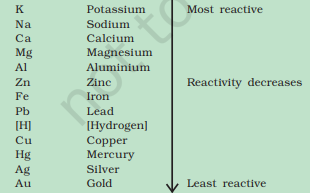
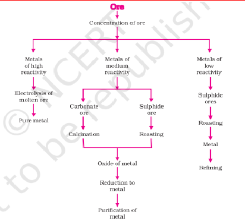
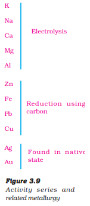

Class 10 Science Chapter 3 detailed notes
Metals: Elements like iron, copper, aluminium, magnesium, sodium, lead, and zinc are lustrous, malleable, ductile, and good conductors of heat and electricity. They are solids at room temperature (except mercury, a liquid) and form positive ions by losing electrons.
Non-metals: Elements such as carbon, sulphur, iodine, oxygen, and hydrogen lack metallic properties. They are brittle, non-ductile, poor conductors (except graphite), and exist as solids, gases, or liquids (e.g., bromine). Non-metals form negative ions by gaining electrons.
Exceptions: Mercury is a liquid metal, iodine is a lustrous non-metal, and graphite conducts electricity despite being a non-metal.
Lusture: Metals have a shiny surface due to free electrons reflecting light.
Hardness: Most metals are hard, though alkali metals (e.g., sodium) are soft.
Malleability: Metals can be beaten into sheets (e.g., gold, silver are highly malleable).
Ductility: Metals can be drawn into wires (e.g., gold can form a 2 km wire from 1 gram).
Conductivity: Metals conduct heat and electricity due to mobile electrons (silver and copper are the best conductors; lead and mercury are poor).
Sonority: Metals produce sound when struck, making them suitable for bells.
Melting/Boiling Points: Generally high, except for gallium and caesium, which melt in the hand.
Dull (except iodine), brittle, and non-malleable/ductile.
State: Solids (e.g., carbon), gases (e.g., oxygen), or liquids (e.g., bromine).
Conductivity: Poor conductors (except graphite).
Melting/Boiling Points: Variable (e.g., diamond has a high melting point).
with Oxygen: Form basic oxides (e.g., 2Cu + O₂ → 2CuO). Some are amphoteric (e.g., Al₂O₃, ZnO), reacting with acids and bases.
with Water: Varies by reactivity—potassium and sodium react violently with cold water (e.g., 2Na + 2H₂O → 2NaOH + H₂), calcium reacts mildly, magnesium with hot water, and aluminium/iron with steam.
with Acids: Produce salt and hydrogen (e.g., Mg + 2HCl → MgCl₂ + H₂), except with nitric acid, which oxidizes H₂ to water.
with Salt Solutions: More reactive metals displace less reactive ones (e.g., Fe + CuSO₄ → FeSO₄ + Cu).
Reactivity Series: Lists metals from most reactive (K) to least (Au), guiding displacement and extraction processes.
Anodising: a process of forming a thick oxide layer of aluminium. Aluminium develops a thin oxide layer when exposed to air. This aluminium oxide coat makes it resistant to further corrosion.
Aqua regia (Latin for 'royal water') is a freshly prepared mixture of concentrated hydrochloric acid and concentrated nitric acid in the ratio of 3:1. It can dissolve gold, even though neither of these acids can do so alone. Aqua regia is a highly corrosive, fuming liquid. It is one of the few reagents that is able to dissolve gold and platinum.
• Reaction with Oxygen: Form acidic (e.g., SO₂) or neutral oxides.
• Reaction with Acids: Do not displace hydrogen.
• Reaction with Hydrogen: Form hydrides (e.g., H₂ + S → H₂S).
The compounds formed by the transfer of electrons from a metal to a non-metal are known as ionic compounds or electrovalent compounds
Formation: Metals lose electrons to non-metals, forming cations and anions (e.g., Na + Cl → NaCl).
Properties
(i)Physical nature: Ionic compounds are solids and are somewhat hard because of the strong force of attraction between the positive and negative ions. These compounds are generally brittle and break into pieces when pressure is applied.
(ii)Melting and Boiling points: Ionic compounds have high melting and boiling. This is because a considerable amount of energy is required to break the strong inter-ionic attraction.
(iii) Solubility: Electrovalent compounds are generally soluble in water and insoluble in solvents such as kerosene, petrol, etc.
(iv) Conduction of Electricity: The conduction of electricity through a solution involves the movement of charged particles. A solution of an ionic compound in water contains ions, which move to the opposite electrodes when electricity is passed through the solution. Ionic compounds in the solid state do not conduct electricity because movement of ions in the solid is not possible due to their rigid structure. But ionic compounds conduct electricity in the molten state. This is possible in the molten state since the electrostatic forces of attraction between the oppositely charged ions are overcome due to the heat
Occurrence: Found as free elements (e.g., gold) or compounds (e.g., oxides, sulphides) in ores within the earth's crust.
Extraction
Low Reactivity: Metals low in the activity series are very unreactive. The oxides of these metals can be reduced to metals by heating alone. For example cinnabar (HgS) is an ore of mercury. When it is heated in air, it is first converted into mercuric oxide (HgO). Mercuric oxide is then reduced to mercury on further heating.
2HgS(s) + 3O (g) 2HgO(s) + 2SO (g) 2 2 Heat→ 2HgO(s) 2Hg(l) + O (g)
copper which is found as Cu2 S in nature can be obtained from its ore by just heating in air. 2Cu S + 3O (g) 2Cu O(s) + 2SO (g) 2Cu O + Cu S 2 2 2 2 2 2 Heat Heat → → 6Cu(s) + SO (g)
Moderate Reactivity
The sulphide ores are converted into oxides by heating strongly in the presence of excess air. This process is known as roasting.
The carbonate ores are changed into oxides by heating strongly in limited air. This process is known as calcination.
The chemical reaction that takes place during roasting and calcination of zinc ores can be shown as follows – Roasting 2ZnS(s) + 3O (g) 2ZnO(s) + 2SO (g) 2 2 →Heat Calcination ZnCO (s) ZnO(s) + CO (g) 3 2 Heat→ The metal oxides are then reduced to the corresponding metals by using suitable reducing agents such as carbon. For example, when zinc oxide is heated with carbon, it is reduced to metallic zinc. ZnO(s) + C(s) → Zn(s) + CO(g)
High Reactivity: Electrolytic reduction (e.g., NaCl → Na + Cl₂).
Many metals, such as copper, zinc, tin, nickel, silver, gold, etc., are refined electrolytically.
In this process, the impure metal is made the anode and a thin strip of pure metal is made the cathode.
A solution of the metal salt is used as an electrolyte.
On passing the current through the electrolyte, the pure metal from the anode dissolves into the electrolyte.
An equivalent amount of pure metal from the electrolyte is deposited on the cathode.
The soluble impurities go into the solution, whereas, the insoluble impurities settle down at the bottom of the anode and are known as anode mud.
Thermit Reaction: sometimes displacement reactions can be highly exothermic. The amount of heat evolved is so large that the metals are produced in the molten state.
The reaction of iron(III) oxide (Fe2O3 ) with aluminium is used to join railway tracks or cracked machine parts.
Fe2O3 (s) + 2Al(s) → 2Fe(l) + Al2O3 (s) + Heat [VERY IMPORTANT REACTION]
Definition: Deterioration of metals due to environmental reactions. Examples:
Silver articles become black after some time when exposed to air. This is because it reacts with sulphur in the air to form a coating of silver sulphide.
Copper reacts with moist carbon dioxide in the air and slowly loses its shiny brown surface and gains a green coat. This green substance is basic copper carbonate.
Iron when exposed to moist air for a long time acquires a coating of a brown flaky substance called rust.
Conditions: Requires moisture and oxygen.
Prevention: The rusting of iron can be prevented by painting, oiling, greasing, galvanising, chrome plating, anodising or making alloys.
SOME COMMONLY USED ALLOYS ARE AS FOLLOWS
Alloy containing mercury is known as Amalgum
Brass, an alloy of copper and zinc (Cu and Zn) is not good conductors of electricity
Bronze, an alloy of copper and tin (Cu and Sn), is not good conductors of electricity
Solder, an alloy of lead and tin (Pb and Sn), has a low melting point and is used for welding electrical wires together.